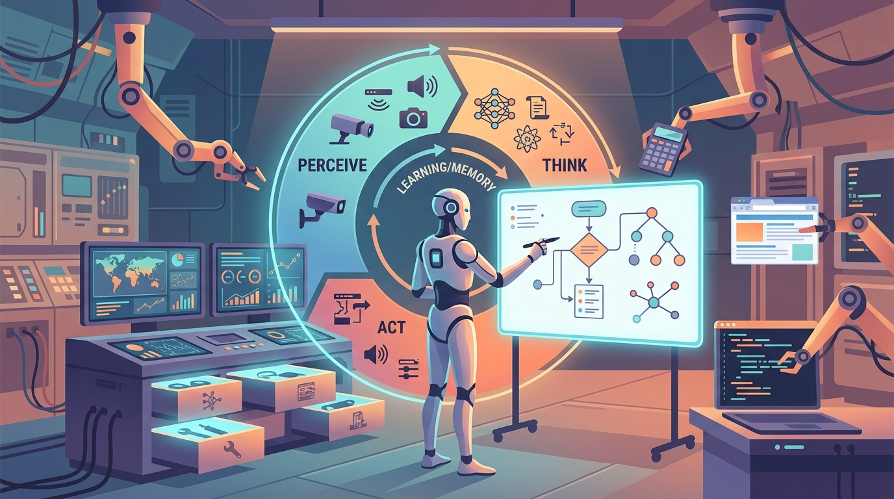

AI agents represent a fundamental shift in how we use large language models. Rather than generating a single response to a single prompt, agents operate in loops: they perceive their environment, reason about what to do next, take actions using tools, and observe the results before deciding on their next step. This perception-reasoning-action cycle transforms LLMs from passive text generators into active problem solvers that can browse the web, write and execute code, query databases, and orchestrate complex multi-step workflows. Where conversational AI systems (Module 20) manage multi-turn dialogue, agents add the ability to take autonomous action in the world.
This module covers the complete landscape of AI agents. It begins with the foundational concepts that distinguish agents from simple chains and workflows, introducing the four core agentic patterns: reflection, tool use, planning, and multi-agent collaboration. It then dives deep into tool use and function calling across major LLM API providers (Module 9), covering everything from basic schema definitions to the Model Context Protocol (MCP) and Agent-to-Agent (A2A) communication standards. The module explores planning and reasoning strategies, from simple ReAct loops to sophisticated tree search algorithms. Finally, it addresses code generation and execution agents that can write, run, debug, and iterate on code autonomously.
By the end of this module, you will be able to build agents that use tools effectively, plan multi-step solutions, generate and execute code safely, and handle the practical challenges of token budgets, error recovery, and human oversight. The patterns introduced here extend naturally into multi-agent architectures (Module 22) and power many of the real-world LLM applications covered in Module 24.
Who: A mid-size SaaS company with 12,000 enterprise customers and a 40-person support team.
Situation: They had deployed a basic LLM chatbot for Tier 1 support, but it could only answer questions from a static FAQ. It had no ability to look up customer accounts, check billing status, or file tickets.
Problem: 62% of conversations required a human handoff because the bot could not access live systems. Average resolution time was 23 minutes, and customer satisfaction hovered at 3.1 out of 5.
Dilemma: Giving the LLM direct database access raised security and compliance concerns; keeping it FAQ-only meant the team could not scale.
Decision: They built a ReAct agent with five sandboxed tools: account lookup, billing status, ticket creation, knowledge base search, and escalation to a human agent.
How: Each tool was wrapped in a validated JSON schema with strict parameter types. A human-in-the-loop checkpoint was added for any action that modified account data.
Result: Human handoffs dropped from 62% to 19%. Average resolution time fell to 4 minutes. Customer satisfaction rose to 4.3 out of 5 within six weeks.
Lesson: The gap between a chatbot and an agent is tools. Adding structured, sandboxed tool access transformed a limited FAQ bot into a genuine problem solver. For guidance on deploying such agents safely, see Module 26: Production Safety.
Who: A pharmaceutical R&D team exploring drug repurposing candidates for a rare autoimmune condition.
Situation: Researchers needed to survey 3,000+ papers across PubMed, clinical trial registries, and internal experiment logs to identify promising compounds.
Problem: Manual review was projected to take three analysts eight weeks. The team had a four-week deadline before the next portfolio review.
Dilemma: A simple RAG pipeline (Module 19) retrieved relevant passages but could not synthesize findings across papers or prioritize compounds by mechanism of action.
Decision: They deployed a plan-and-execute agent that first generated a structured research plan (search queries, inclusion criteria, synthesis steps), then executed each step using PubMed search, PDF extraction, and a scoring tool.
How: The agent used a reflection loop after each phase, comparing extracted findings against the original research question and revising its plan when gaps appeared.
Result: The agent produced a ranked shortlist of 14 compounds in nine days. Human reviewers validated 11 of the 14 as genuinely promising, a hit rate that matched the team's historical manual accuracy.
Lesson: Planning is what separates an agent from a pipeline. The ability to decompose a complex task, execute steps, and revise the plan mid-flight made the difference between retrieval and genuine research assistance.
Who: A fintech startup with a 15-person engineering team migrating from a monolithic Django application to microservices.
Situation: The migration involved rewriting 200+ database queries across 38 service endpoints. Each rewrite needed to pass integration tests against both the old and new schemas.
Problem: Manual rewrites were error-prone. The first batch of 20 endpoints had a 35% test failure rate, and debugging each failure took 45 minutes on average.
Dilemma: Generating code with an LLM produced syntactically correct queries that often failed on edge cases (NULL handling, timezone conversions, pagination offsets).
Decision: They built a code execution agent using E2B sandboxes. The agent would generate a query rewrite, run the integration test suite, parse failures, and iteratively fix its own code until tests passed.
How: The agent was given a three-attempt budget per endpoint. If all three attempts failed, it escalated to a human engineer with a detailed error analysis.
Result: The agent successfully migrated 168 of 200 endpoints autonomously (84% success rate). The remaining 32 were escalated with enough context that engineers resolved them in 10 minutes each instead of 45.
Lesson: Self-debugging loops turn code generation from a one-shot gamble into a reliable engineering workflow. The key is giving the agent access to test execution, not just code generation.
Who: The SRE team at an e-commerce platform handling 2M daily orders.
Situation: During a Black Friday traffic spike, the payment service began returning intermittent 503 errors. The on-call engineer was already handling another incident.
Problem: Diagnosing the root cause required checking metrics dashboards, querying log aggregators, reviewing recent deployments, and correlating across three different monitoring tools. This manual triage typically took 15 to 25 minutes.
Dilemma: Automated runbooks covered known failure modes, but this was a novel combination of symptoms (high latency plus connection pool exhaustion plus a recent config change).
Decision: They deployed an incident triage agent with tools for Datadog metrics queries, Elasticsearch log search, GitHub deployment history, and PagerDuty status updates.
How: The agent used a ReAct loop: it queried metrics first, identified the connection pool anomaly, searched logs for correlated errors, found the config change deployed 90 minutes earlier, and generated a rollback recommendation with supporting evidence.
Result: Time to root cause identification dropped from 22 minutes to 3 minutes. The agent's rollback recommendation was correct, and the engineer approved it in under a minute.
Lesson: Agents shine brightest when a task requires correlating information across multiple systems under time pressure. The reasoning loop is what connects disparate data sources into a coherent diagnosis. Scaling this to multiple specialized agents is the focus of Module 22: Multi-Agent Systems.
An AI agent is basically a to-do list that argues with itself. It writes down a plan, starts executing, realizes step three was a terrible idea, rewrites the plan, and somehow still finishes before most humans would have opened the right browser tab.
Giving an LLM a tool is like giving a toddler a TV remote. It will press every button, occasionally find exactly what it wants, and sometimes change the input source to something nobody knew existed. The difference is that the LLM can eventually learn which buttons actually matter.
Yao, S., Zhao, J., Yu, D., Du, N., Shafran, I., Narasimhan, K., & Cao, Y. (2023). "ReAct: Synergizing Reasoning and Acting in Language Models." arXiv:2210.03629
Introduces the ReAct framework that interleaves reasoning traces with actions, forming the basis of most modern agent loops.
Schick, T., Dwivedi-Yu, J., Dessì, R., Raileanu, R., Lomeli, M., Zettlemoyer, L., Cancedda, N., & Scialom, T. (2023). "Toolformer: Language Models Can Teach Themselves to Use Tools." arXiv:2302.04761
Demonstrates how LLMs can learn to call external APIs autonomously, a key milestone for tool-using agents.
Wei, J., Wang, X., Schuurmans, D., Bosma, M., Ichter, B., Xia, F., Chi, E., Le, Q., & Zhou, D. (2022). "Chain-of-Thought Prompting Elicits Reasoning in Large Language Models." arXiv:2201.11903
Foundational work on chain-of-thought prompting that underpins the reasoning component of agent architectures.
Wang, L., Ma, C., Feng, X., Zhang, Z., Yang, H., Zhang, J., Chen, Z., Tang, J., Chen, X., Lin, Y., Zhao, W. X., Wei, Z., & Wen, J. (2024). "A Survey on Large Language Model based Autonomous Agents." arXiv:2308.11432
Comprehensive survey covering agent architecture, perception, planning, action, and memory modules.
Zhou, A., Yan, K., Shlapentokh-Rothman, M., Wang, H., & Wang, Y.-X. (2024). "Language Agent Tree Search Unifies Reasoning, Acting, and Planning in Language Models." arXiv:2310.04406
Proposes LATS, combining Monte Carlo tree search with LLM agents for improved planning and decision-making.
Russell, S., & Norvig, P. (2021). Artificial Intelligence: A Modern Approach (4th ed.). Pearson. aima.cs.berkeley.edu
The definitive AI textbook, covering agent architectures, planning algorithms, and decision-making under uncertainty.
Ng, A. (2024). "Agentic Design Patterns." DeepLearning.AI. deeplearning.ai/the-batch
Andrew Ng's influential series outlining the four core agentic patterns: reflection, tool use, planning, and multi-agent collaboration.
LangGraph. LangChain, Inc. github.com/langchain-ai/langgraph
Framework for building stateful, multi-step agent applications using directed graphs with built-in checkpointing.
OpenAI Agents SDK. OpenAI. github.com/openai/openai-agents-python
OpenAI's official SDK for building agents with tool use, handoffs, and guardrails on top of their API.
Anthropic Claude Code. Anthropic. docs.anthropic.com/en/docs/claude-code
Anthropic's agentic coding tool that uses Claude to write, execute, and debug code autonomously in a terminal.
Model Context Protocol (MCP). Anthropic. modelcontextprotocol.io
Open standard for connecting LLM agents to external data sources and tools via a universal protocol.
E2B. E2B Dev, Inc. github.com/e2b-dev/e2b
Cloud sandboxes for running AI-generated code safely, widely used for code execution agents.
In the next section, Section 21.1: Foundations of AI Agents, we establish the foundations of AI agents, defining what makes a system agentic and how agents differ from simple chatbots.